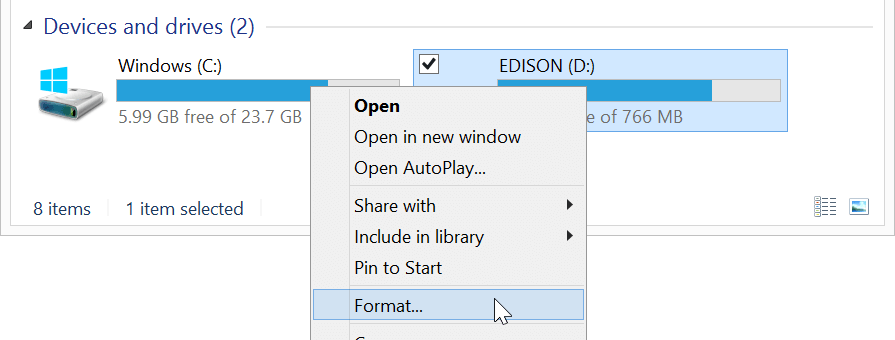
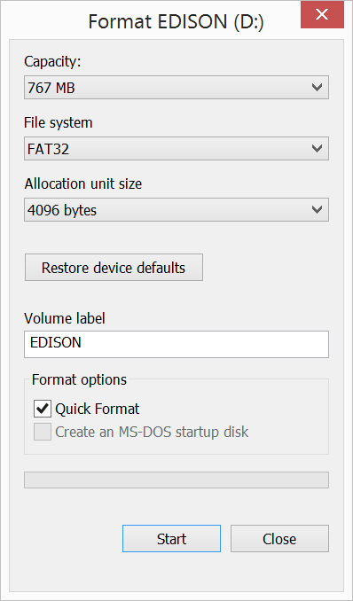

Step 1: Prepare built-in flash storage (Windows)
Make sure there are no files on the built-in flash storage of the Intel® Edison by formatting the storage. The storage must be formatted as FAT32.

-
In order to read or write to the Intel® Edison’s built-in flash storage, connect the Intel® Edison to your computer via the device mode micro-USB connector.

-
Use Windows File Explorer to format the flash storage drive. Right-click on the “Edison” drive that appears after plugging in the Intel® Edison to your computer, then select “Format”.

-
In the “Format Edison” dialog window, keep the default settings. Click “Start”.

-
In the popup, click “Ok” to confirm the formatting of the “Edison” drive.
Formatting should only take a few seconds.
The “Edison” folder should now be empty.